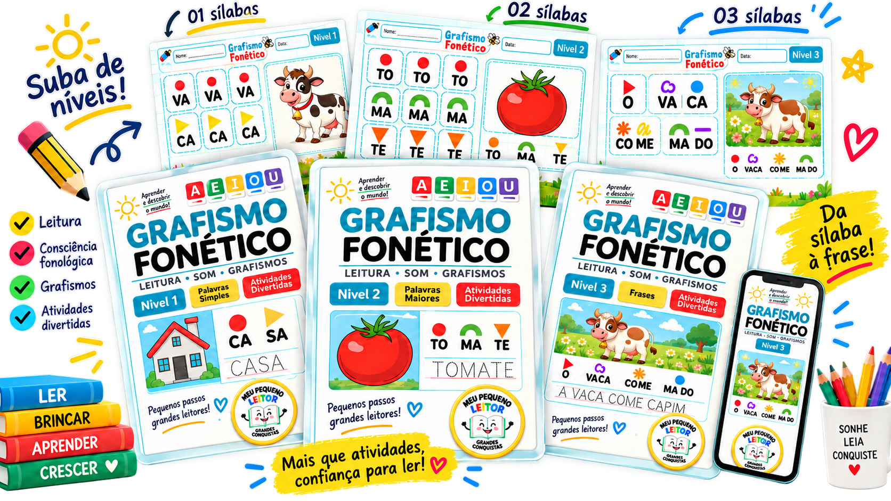
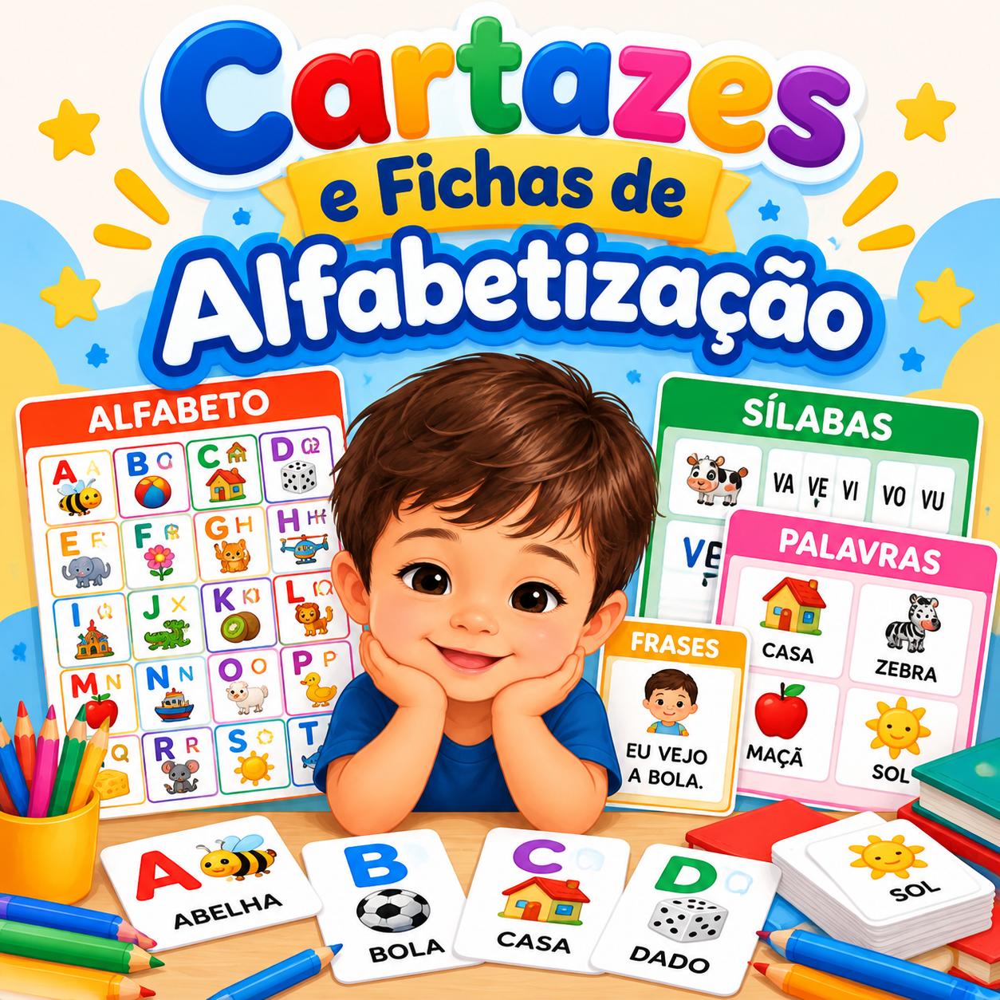

Trabalha habilidades fundamentais para a alfabetização.
OFERTA ESPECIAL DE HOJE
Descubra a técnica americana que pode ajudar seu filho a aprender a ler até 5 vezes mais rápido, sem pressão!
Mesmo que ele ainda tenha dificuldade para reconhecer letras, juntar sílabas ou formar suas primeiras palavras.

Com apenas 10 minutos por dia, você pode ajudar seu pequeno a desenvolver a leitura com atividades simples, divertidas e feitas para o ritmo dele.
QUERO MEU PEQUENO APRENDENDO A LER!- Ideal para crianças em fase de alfabetização.
- Mesmo que ainda não reconheçam todas as letras e sons.
- Material exclusivo com mais de 200 atividades práticas.
- Fácil de aplicar em casa, mesmo que você não seja professora.
Seu filho pode desenvolver habilidades essenciais para ler com mais confiança, usando uma abordagem fonética inspirada em práticas de alfabetização americanas.
VOCÊ JÁ PASSOU POR ISSO?
Muitos pais acreditam que a criança vai aprender a ler naturalmente com o tempo. Até perceberem que...
Ela não consegue juntar as letras para formar palavras simples.
A hora da lição se transforma em choro, nervosismo e frustração.
Os coleguinhas já estão lendo, enquanto ela ainda encontra dificuldades.
Ela começa a perder o interesse pelos livros e atividades escolares.
E O PIOR...
Seu filho pode começar a dizer:
“Eu não consigo, mamãe...”
Imagine ouvir isso de uma criança que está tentando aprender.
Você quer ajudar, tenta explicar de várias maneiras, mas não sabe o que fazer para que ele finalmente entenda.
Mas existe uma boa notícia!
Existem maneiras mais simples de estimular as habilidades necessárias para a leitura.
Seu filho não precisa de mais pressão. Precisa de oportunidades adequadas para aprender.
Entenda por que seu filho pode estar tendo tanta dificuldade para aprender a ler...
Muitas crianças começam a tentar memorizar letras e sílabas sem compreender como os sons se relacionam com as palavras.
Isso pode fazer com que a alfabetização pareça difícil e cansativa.
É justamente aí que a abordagem fonética faz diferença.
Utilizada em diferentes programas de alfabetização nos Estados Unidos, essa abordagem ajuda a criança a desenvolver a relação entre os sons da fala e as letras.
Em vez de depender apenas da memorização, ela aprende a identificar, combinar e reconhecer os sons que formam as palavras.
Por que essa abordagem é eficiente?
Ajuda a compreender como letras e sons se relacionam.
Organiza o aprendizado em etapas progressivas e fáceis de acompanhar.
Favorece uma prática mais estruturada e consistente.
E O MELHOR DE TUDO...
Você pode começar a estimular essas habilidades com apenas 10 minutos por dia!
Por isso você precisa conhecer o Kit de Grafismo Fonético!
Um material exclusivo que reúne mais de 200 atividades para ajudar seu filho a desenvolver as habilidades necessárias para aprender a ler e escrever.
O kit combina exercícios de grafismo, coordenação motora, reconhecimento de letras e atividades relacionadas aos sons das palavras.
VEJA O MATERIAL POR DENTRO
Veja algumas das atividades que seu filho vai receber!
Atividades coloridas, organizadas por níveis e prontas para imprimir.


Mais de 200 atividades para ajudar seu pequeno a aprender!
Cada atividade foi organizada para ajudar seu pequeno a:
Desenvolver a coordenação motora fina.
Reconhecer letras, sons e padrões.
Aprender a formar sílabas e palavras.
Melhorar a concentração durante as atividades.
Ganhar confiança para tentar ler sozinho.
Tornar o momento de aprendizagem mais agradável.
POR QUE FUNCIONA?
Por que as atividades de Grafismo Fonético funcionam?
Porque trabalham habilidades importantes que participam do processo de alfabetização.
Reconhecer padrões
Identificar formas, traçados e letras.
Perceber sons
Aprender a reconhecer os sons da fala.
Relacionar letras e sons
Compreender como eles se combinam para formar palavras.
Praticar a leitura
Avançar gradualmente para sílabas, palavras e frases.
Tudo com um material organizado, pronto para imprimir e utilizar em casa.
Veja o que seu filho vai aprender com o Kit de Grafismo Fonético!
Reconhecimento de sons e letras
Atividades que ajudam a criança a associar letras aos seus sons.
Formação de sílabas e palavras
Exercícios progressivos para compreender como as letras se unem.
Leitura de frases simples
Atividades que permitem praticar a leitura e desenvolver a compreensão.
Coordenação motora e escrita
Exercícios de traçado, linhas e formas que auxiliam no desenvolvimento da escrita.
VEJA NA PRÁTICA
Veja como é fácil ensinar seu filho a ler com o Grafismo Fonético...
Aperte o play e descubra como funciona!
Assista à demonstração e descubra como utilizar as atividades em casa.
BAIXAR ATIVIDADES AGORA!
UMA ROTINA SIMPLES DE APRENDIZADO
Apenas 10 minutos por dia podem fazer parte de uma grande conquista na vida do seu filho!
Você não precisa passar horas ensinando nem transformar sua casa em uma sala de aula.
Com atividades adequadas ao nível da criança, é possível criar pequenos momentos de aprendizagem na rotina.
O segredo é a constância, não a pressão.
O Kit Grafismo Fonético foi desenvolvido para facilitar a prática em casa, inclusive para famílias com pouco tempo disponível.
Pequenas conquistas que fazem uma grande diferença!
Veja o que mães e educadores dizem sobre o Kit de Grafismo Fonético.
★★★★★
"Meu filho tinha muita dificuldade para juntar as letras. Depois das atividades ele começou a reconhecer os sons e ficou muito mais interessado em aprender."

Ana Paula
Mãe do Pedro, 6 anos
★★★★★
"Eu estava procurando algo que ajudasse minha filha sem deixar o momento da leitura cansativo. As atividades são simples, divertidas e ela adora fazer."
Carla Mendes
Mãe da Sofia, 5 anos
★★★★★
"Como educadora, vejo que atividades bem estruturadas ajudam a criança a desenvolver confiança e aprender no próprio ritmo."
Mariana Oliveira
Professora alfabetizadora
Cada criança aprende no seu ritmo. E cada pequena conquista merece ser celebrada!
Veja tudo que você vai receber no Kit de Grafismo Fonético!
Chega de perder tempo procurando atividades na internet.
Você terá um material organizado, com diferentes níveis de dificuldade, para acompanhar a aprendizagem do seu pequeno.
MATERIAL PRINCIPAL
O kit principal inclui:
Mais de 200 atividades
Exercícios de Grafismo Fonético para apoiar a alfabetização.
Nível 01 — Primeiras palavras
Atividades com palavras de duas sílabas.
Nível 02 — Evoluindo na leitura
Atividades com palavras de três sílabas.
Nível 03 — Leitura de frases
Exercícios com frases curtas para praticar a leitura.
Grafismo com letra bastão
Atividades de escrita, traçados e coordenação motora.
E garantindo seu acesso, você ainda recebe 6 SUPER BÔNUS grátis!
Materiais complementares para tornar a aprendizagem ainda mais completa!
Método Meu Pequeno Leitor
Material lúdico para apoiar os primeiros passos na alfabetização.
Coordenação Motora
Exercícios para desenvolver movimentos e precisão.

Leitura e Escrita
Exercícios complementares de letras, sílabas e palavras.

Cartazes e Fichas de Alfabetização
Recursos visuais para tornar a prática mais dinâmica.

Português Inicial
Atividades para desenvolver habilidades de linguagem.

Matemática Inicial
Exercícios de números, quantidades e raciocínio.
Kit completo + 6 bônus especiais! Tudo em formato digital, pronto para baixar e imprimir quando precisar.
Em apenas 3 passos, você já pode começar a ajudar seu filho a ler!
Tudo foi pensado para facilitar sua rotina. Veja como é fácil começar!
Receba no seu e-mail
Após a compra, você recebe o acesso ao material digital com todas as atividades em PDF.
Imprima as atividades
Escolha os exercícios adequados ao nível do seu pequeno e imprima quando quiser.
Pratique apenas 10 minutos por dia
Acompanhe seu filho nas atividades e transforme esse momento em uma experiência divertida de aprendizagem.
Simples, prático e sem mensalidades!
Comece no conforto da sua casa, respeitando o ritmo do seu pequeno.Seu acesso completo ao Kit Grafismo Fonético + 6 Bônus Especiais!
Imagine ter em suas mãos um material organizado para ajudar seu filho a descobrir o mundo da leitura.
Com atividades progressivas, você não precisa mais ficar procurando o que ensinar a cada dia.
OFERTA ESPECIAL
Hoje você recebe:
Um kit completo para apoiar o aprendizado do seu pequeno.

✓
Kit Grafismo Fonético
Mais de 200 atividades
R$ 97,00
✓
Método Meu Pequeno Leitor
Bônus 01
R$ 47,00
✓
Coordenação Motora
Bônus 02
R$ 27,00
✓
Leitura e Escrita
Bônus 03
R$ 27,00
✓
Cartazes e Fichas
Bônus 04
R$ 27,00
✓
Português Inicial
Bônus 05
R$ 47,00
✓
Matemática Inicial
Bônus 06
R$ 47,00
✓ Acesso vitalício
✓ Acesso imediato
✓ Garantia de 7 dias
Soma dos valores individuais:
R$ 319,00
Você recebe o kit completo por apenas:
R$
19,90
Pagamento único • Sem mensalidades
🔒 Compra segura
⚡ Acesso imediato
SUA COMPRA PROTEGIDA
Garantia incondicional de 7 dias!
Você terá 7 dias para conhecer o material e verificar se ele atende às necessidades da sua família.
Se não ficar satisfeito, poderá solicitar a devolução do valor dentro do período de garantia.
Compra segura, acesso imediato e material para utilizar no conforto da sua casa.Perguntas frequentes
Ainda tem alguma dúvida? Confira as respostas para as perguntas mais comuns sobre o Kit Grafismo Fonético.
Para qual idade o Kit de Grafismo Fonético é indicado?
O material possui atividades para diferentes etapas do desenvolvimento. A escolha deve considerar principalmente o nível de alfabetização, e não apenas a idade da criança.
Meu filho ainda não sabe ler. Posso utilizar?
Sim. O kit inclui atividades introdutórias que trabalham letras, sons, coordenação e habilidades preparatórias para a alfabetização.
Preciso ser professora para aplicar as atividades?
Não. O material foi organizado para facilitar a utilização por pais e responsáveis.
Apenas 10 minutos por dia são suficientes?
Dez minutos são um ponto de partida para criar uma rotina. O progresso depende das necessidades, da idade e do desenvolvimento de cada criança.
Como recebo o material?
Após a confirmação da compra, você recebe o acesso digital para baixar os arquivos em PDF.
Posso imprimir mais de uma vez?
Sim. O acesso é vitalício e você poderá imprimir as atividades quando precisar.
E se eu não gostar?
Você terá 7 dias de garantia para solicitar o reembolso.
SEU PEQUENO PODE COMEÇAR HOJE!
Dê ao seu filho a oportunidade de descobrir o prazer de aprender a ler!
Tenha acesso ao Kit Grafismo Fonético com mais de 200 atividades e 6 bônus especiais para praticar em casa.
ACESSO COMPLETO POR APENAS
QUERO MEU KIT POR R$ 19,90!
R$
19,90
Pagamento único • Sem mensalidades
✓ Acesso vitalício
✓ Material digital em PDF
✓ Garantia de 7 dias